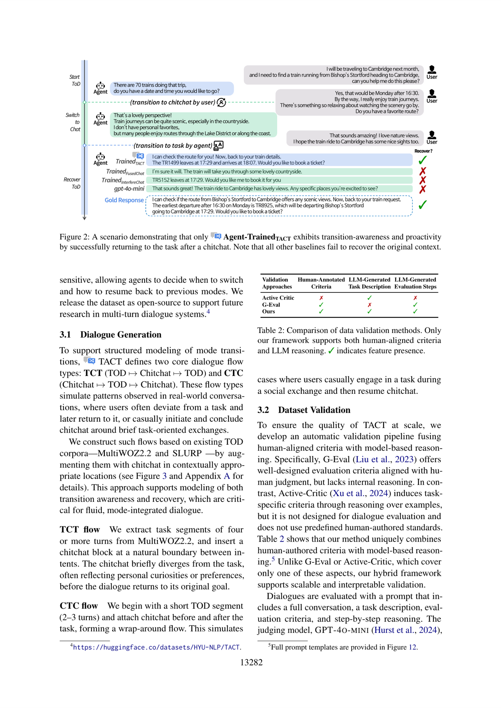

목적 지향 대화(TOD)와 일상 대화(chitchat) 간의 자연스러운 전환을 모델링하는 TACT 데이터셋과 새로운 평가 지표(Switch, Recovery)를 제안하여, 보다 유연하고 능동적인 대화형 AI를 가능하게 합니다.

인간의 대화에서는 "항공편 예약해 주세요"(목적 지향)에서 "요즘 날씨가 좋네요"(일상 대화)로 자연스럽게 전환이 일어납니다. 그러나 기존 대화 AI 시스템은 둘 중 하나만 처리하도록 설계되어 있었습니다.
한계: 기존 시스템은 목적 지향 대화(TOD) 또는 일상 대화에 특화되어 있어, 실제 대화에서 자연스럽게 발생하는 모드 전환을 처리할 수 없습니다.
혁신: TACT는 사용자뿐만 아니라 에이전트도 능동적으로 대화 모드를 전환할 수 있어야 한다는 점을 인식합니다.
| 지표 | 성능 |
|---|---|
| Joint Mode-Intent Accuracy | 75.74% |
| 인간 평가 GPT-4o 대비 승률 | 70.1% |
진정으로 자연스러운 대화 AI를 만들기 위해서는 목적 지향 대화와 일상 대화를 별개의 영역으로 보는 것을 넘어서야 합니다. TACT는 대화의 유동성을 모델링하는 최초의 데이터셋으로, AI 어시스턴트가 인간처럼 유연하게 대화 모드를 전환하면서도 원래 과제를 놓치지 않도록 학습할 수 있게 합니다.